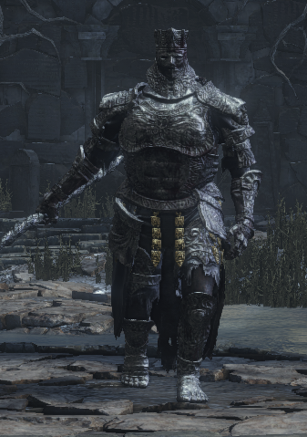
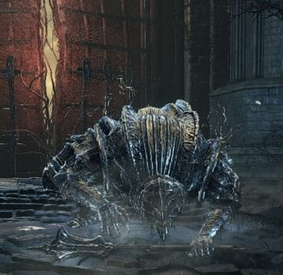
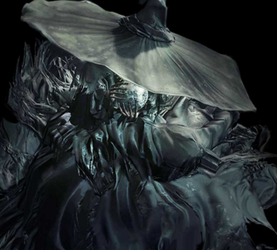
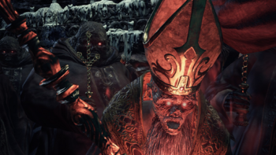
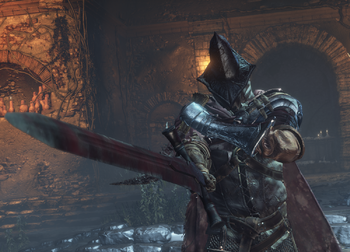
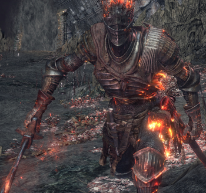

Iudex Gundyr
Будучи чемпионом, Гундир слишком поздно прибыл в Храм Огня и обнаружил его без пламени и с неисправным колоколом. Гундир был повержен неизвестным воином, а затем стал ножнами для витого меча в надежде, что Первое Пламя когда-нибудь будет зажжено вновь. Таким образом, Гундир стал "судией", ожидая прибытия Чемпионов Пепла, чтобы отдать избранному витой меч. Он получил особую алебарду для исполнения своего долга и был скован стальной цепью. Однажды во время своего бдения, он стал хозяином извивающегося порождения Бездны, которое обладает собственной волей.
Vordt of the Boreal Valle
Когда-то Вордт наряду с Танцовщицей Холодной долины был одним из высокопоставленных Иритилльских рыцарей. Однако кольцо Левый глаз понтифика превратило его в озверевшее чудовище, которое встречает любого кто попытается продолжить свое путешествие в Поселение нежити. Вордт был приставлен Понтификом Саливаном на Высокую стену Лотрика для охраны земель Повелителей Пепла от Негорящих, стремящихся вновь возжечь Первое Пламя.
Crystal Sage
Давным-давно один из знатоков заключил договор с Легионами нежити и стал обучать чародеев Фаррона
Deacons of the Deep
После того как Олдрик отправился в Холодную долину, архидьякон Ройс остался в соборе с верховными жрецами, чтобы вечно охранять гроб своего повелителя.
Abyss Watchers
Эти воины нежити поклялись вкусить волчью кровь. Они ищут следы Бездны, постоянно сражаясь с ее порождениями.
Soul of Cinder
 PLIN PLIN PLON